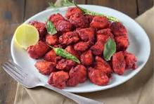

homepage
CHICKEN65 RECIPE
History of chicken65:
- Chicken 65 originated in Chennai (Tamil Nadu), at the famous Buhari Hotel in 1965.
- It is known for its spicy, tangy flavor and crispy texture.
- The number “65” refers to the year it was introduced on the menu.

Ingredients:
- Boneless chicken pieces
- Cornflour, rice flour
- Red chili powder
- salt
- turmeric
- Ginger-garlic paste
- Curd (yogurt)
- Curry leaves, green chilies
- Oil for frying
- Lemon juice
Procedure:
- Marinate chicken with curd, spices, and ginger-garlic paste for at least 1 hour.
- Add cornflour and rice flour to make a coating.
- Deep fry the chicken till crispy and golden.
- In a pan, heat oil, add curry leaves and green chilies.
- Toss the fried chicken in this tempering.
- Add a squeeze of lemon juice before serving hot